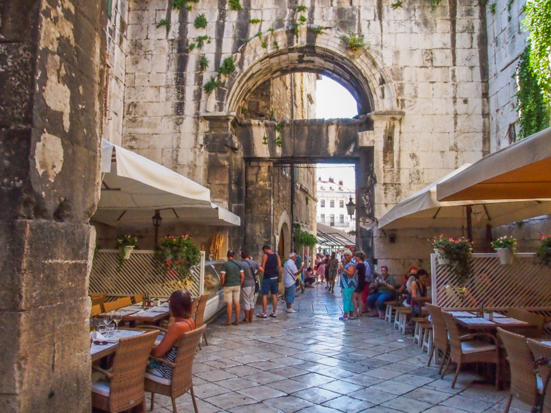
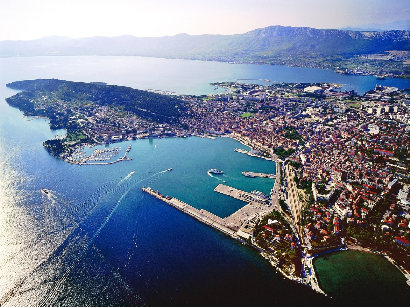
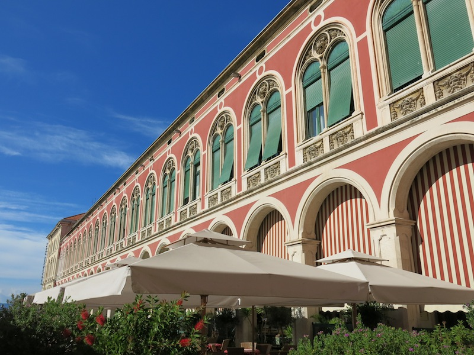

Split (Latin : Spalatum, italien : Spalato) est la seconde ville la plus peuplée de Croatie et le siège du Comitat de Split-Dalmatie. Au recensement de 2011, le comitat comptait 454 798 habitants, la municipalité 178 102 habitants, dont 96,23 % de Croates et la ville seule comptait 167 121 habitants.
La ville de Split s'est établie à l'intérieur, puis autour de l'immense palais de l'empereur romain Dioclétien, construit entre 294 et 305, qui s'étendait sur une surface de 39 000 m2. L'empereur était originaire de la ville de Salone (située sur les hauteurs de Split). En 1420, Split fut intégrée dans la République de Venise, jusqu'à sa disparition en 1797. La ville est aujourd'hui inscrite sur la liste du patrimoine mondial par l'UNESCO.
Galerie
.
  clearfix